Largest protected area of Chihuahuan Desert topography and ecology in the United States, and was named after a large bend in the Rio Grande/Río Bravo
General Information
Chisos Basin Visitor Center
Open all year, 8:30 am-4:00 pm. Closed for lunch
Reduced hours on Christmas day
Panther Junction Visitor Center
Open all year, 8:30 am-5:00 pm. Reduced hours on Christmas day.
Castolon Visitor Center
Open seasonally, November 1 through April 30, 10:00 am-4:00 pm. Closed for lunch
Persimmon Gap Visitor Center
Open seasonally, November 1 through April 30, 10:00 am-4:00 pm. Closed for lunch
Rio Grande Village Visitor Center
Open seasonally, November through April, 9:00 am-4:30 pm. Closed for lunch
Accepts America The Beautiful Pass
From El Paso (328mi) Get on I-10 E. Follow I-10 E and US-90 E to US-385 S in Marathon. Continue on US-385 S to your destination in Big Bend National Park
Overview
Big Bend National Park in West Texas protects a vast, remote stretch of the Chihuahuan Desert along the Rio Grande, named for the large bend the river makes along the U.S.-Mexico border. At over 800,000 acres, it is one of the largest national parks in the lower 48 and one of the least visited, yet it is among the most biologically diverse, with more than 1,200 species of plants, 450 species of birds, and dozens of mammals and reptiles. Desert, river canyons, and mountains meet here, and the Chisos Mountains, the only mountain range entirely within a national park, rise as a cool "sky island" above the desert floor.
The area holds nearly 10,000 years of human history, from ancient peoples to ranchers and miners. Texas set the land aside as a state park in the 1930s before deeding it to the federal government, and Big Bend became a national park in 1944. People come for the hiking and backpacking, the river canyons, the star-filled skies of an International Dark Sky Park, the wildflowers, birding, and the feeling of isolation. The park is far from everything, and that is much of its appeal.
Park Sections
The park's main hubs are far apart, so distances are long. Panther Junction is the park headquarters and the center of the road system. The Chisos Basin, a bowl in the mountains, has the lodge, campground, restaurant, and trailheads for the South Rim and other hikes. Rio Grande Village in the east has a campground, a store, the hot springs, and the Boquillas Canyon trail. In the southwest, Castolon and Santa Elena Canyon are reached by the Ross Maxwell Scenic Drive. The Rio Grande Wild and Scenic River extends beyond the park.
Sightseeing and Exploring the Park
The best scenic drive is the 30-mile Ross Maxwell Scenic Drive, which runs from the west side of the park to Castolon and the Santa Elena Canyon, with overlooks including Sotol Vista, Mule Ears, and Tuff Canyon. The road to the Chisos Basin climbs into the mountains with views of the desert below. Persimmon Gap, at the north entrance, and the road to Rio Grande Village offer desert scenery and views of the Rio Grande. Sunsets at Sotol Vista and the Window View in the Chisos Basin are especially popular. Plan on long drives between points, and carry water and gas.
Hiking
Big Bend has more than 150 miles of trails. Popular easy hikes include the Window View Trail (0.3 miles), Santa Elena Canyon Trail (1.7 miles round trip), the Hot Springs Historic Trail (1 mile), Boquillas Canyon (1.4 miles), and Grapevine Hills (2.2 miles round trip to a balanced rock). Moderate hikes include the Lost Mine Trail (4.8 miles) and the Window Trail (5.6 miles). The South Rim Trail, a 12-mile loop in the Chisos, and the Outer Mountain Loop, a 30-mile backpacking route, are the most demanding, and Emory Peak is a 10.5-mile round trip. Summer heat is dangerous, so carry plenty of water and avoid midday hikes in the desert.
Other Activities
The Rio Grande offers canoe, kayak, and raft trips through canyons such as Santa Elena, Mariscal, and Boquillas, which can be arranged through outfitters in Terlingua, Lajitas, and Study Butte. Other activities include birdwatching, bicycling on paved and dirt roads, stargazing, soaking in the Rio Grande Village hot springs, and ranger programs. Visitors can also cross the river to the Mexican village of Boquillas at the Boquillas Port of Entry, which requires a passport, and nearby Terlingua offers a ghost town and chili cook-offs. There are no cave tours.
Flora and Wildlife
The park's plants include desert species such as lechuguilla, ocotillo, prickly pear, and agave, with wildflowers including bluebonnets and Big Bend bluebonnets in March and April, and, in the Chisos, oaks, pines, junipers, and Arizona cypress. Wildlife includes javelinas, coyotes, roadrunners, mule deer, black bears, and mountain lions, which are rarely seen, along with tarantulas and rattlesnakes. Birders come to see the Colima warbler, which nests only here in the United States, as well as peregrine falcons and many migrants. Viewing is on your own, and Chisos Basin and Rio Grande Village are the best birding areas.
Access
Big Bend is extremely remote. The park is in the far southwest corner of Texas, and the north entrance at Persimmon Gap is about 70 miles south of Marathon on US-385, while the west entrance is reached from Study Butte on Highway 118. Alpine is about 100 miles north (1.5 to 2 hours), Midland-Odessa about 4 hours, El Paso about 5 hours, and San Antonio about 7 hours. The nearest airports with commercial service are in Midland, El Paso, and Alpine's small airport. There is no public transportation. Gas and services are very limited in the park, so fill up in Marathon, Alpine, or Study Butte.
Seasons
Winter and spring, from November to April, are the most popular and comfortable seasons, with mild days and cool nights; wildflowers bloom in March and April, and spring break brings crowds. Summers are extremely hot in the desert, with temperatures above 100 °F, while the Chisos Mountains are cooler. The monsoon season from July to September brings thunderstorms and flash floods. Fall is pleasant, with fewer visitors. Freezing nights can occur in winter in the mountains. Some services are limited in summer, so check the National Park Service website.
Camping and Lodging
The park has four developed campgrounds: Chisos Basin, Rio Grande Village, Cottonwood, and a concession-run RV park at Rio Grande Village, and backcountry camping is available with a permit. The only lodging in the park is the Chisos Mountains Lodge in the Chisos Basin, which fills quickly. Outside the park, Terlingua, Lajitas, and Study Butte, all about 30 minutes from the west entrance, have motels, cabins, and resorts such as the Lajitas Golf Resort. Alpine, about 100 miles north, offers hotels such as the Maverick Inn and the Holland Hotel, and Marathon has the historic Gage Hotel.
Visitor Centers
The park has several visitor centers. Panther Junction Visitor Center is the main one, with exhibits, a bookstore, and information on conditions. The Chisos Basin Visitor Center serves hikers and campers in the mountains. The Rio Grande Village Visitor Center and Castolon Visitor Center are open seasonally, and Persimmon Gap Visitor Center welcomes visitors at the north entrance. Hours vary by season, so check the National Park Service website.
This article uses material from the Wikipedia article "Big Bend National Park", which is released under the Creative Commons Attribution-Share-Alike License 3.0. Additional information comes from the National Park Service Big Bend National Park website.
Featured Sections and Trails
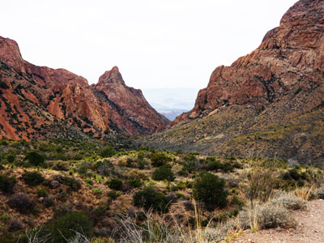
Jeff P from Berkeley, CA, USA, CC BY 2.0, via Wikimedia Commons; Image Size Adjusted
.jpg){kind=link}
Chisos Basin
Mountain basin surrounded by rugged peaks featuring scenic overlooks, hiking trails, wildlife viewing opportunities, lodging, camping, and cooler temperatures than the surrounding desert.
Jeff P from Berkeley, CA, USA, CC BY 2.0, via Wikimedia Commons; Image Size Adjusted
Panther Junction
Central visitor facility featuring exhibits, orientation resources, permits, maps, educational displays, and information about the area's geology, wildlife, and cultural history.
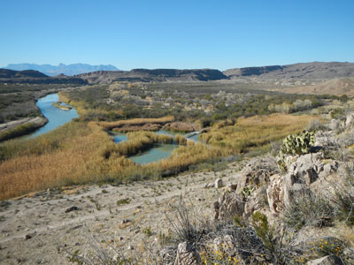
Jeff P from Berkeley, CA, USA, CC BY 2.0, via Wikimedia Commons; Image Size Adjusted
Rio Grande Village
Riverside visitor area featuring campgrounds, nature trails, wildlife viewing opportunities, and scenic access to one of the park’s most diverse ecosystems.
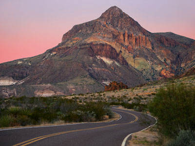
Jeff P from Berkeley, CA, USA, CC BY 2.0, via Wikimedia Commons; Image Size Adjusted
Ross Maxwell Scenic Drive
Scenic park roadway showcasing volcanic mountains, desert expanses, historic sites, and canyon overlooks along one of the most spectacular drives in the American Southwest.
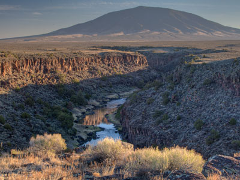
Jeff P from Berkeley, CA, USA, CC BY 2.0, via Wikimedia Commons; Image Size Adjusted
Rio Grande Wild and Scenic River
Protected river corridor flowing through deep canyons and desert landscapes, offering exceptional opportunities for paddling, wildlife viewing, and scenic exploration.
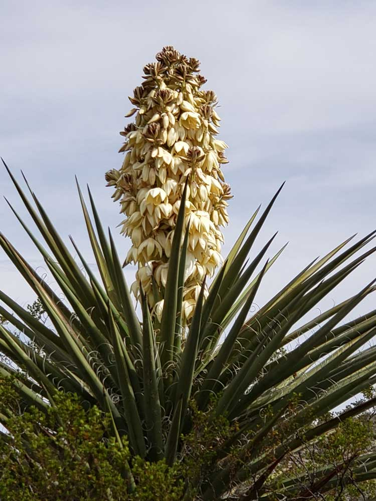

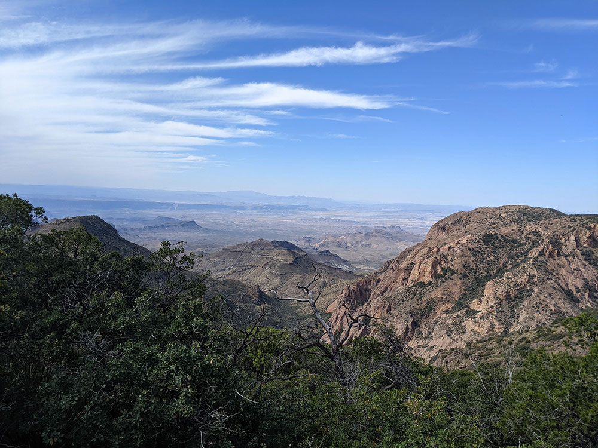

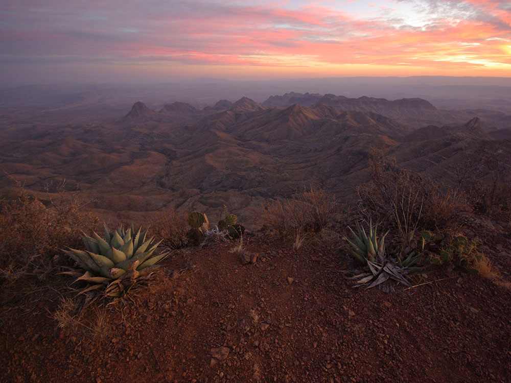

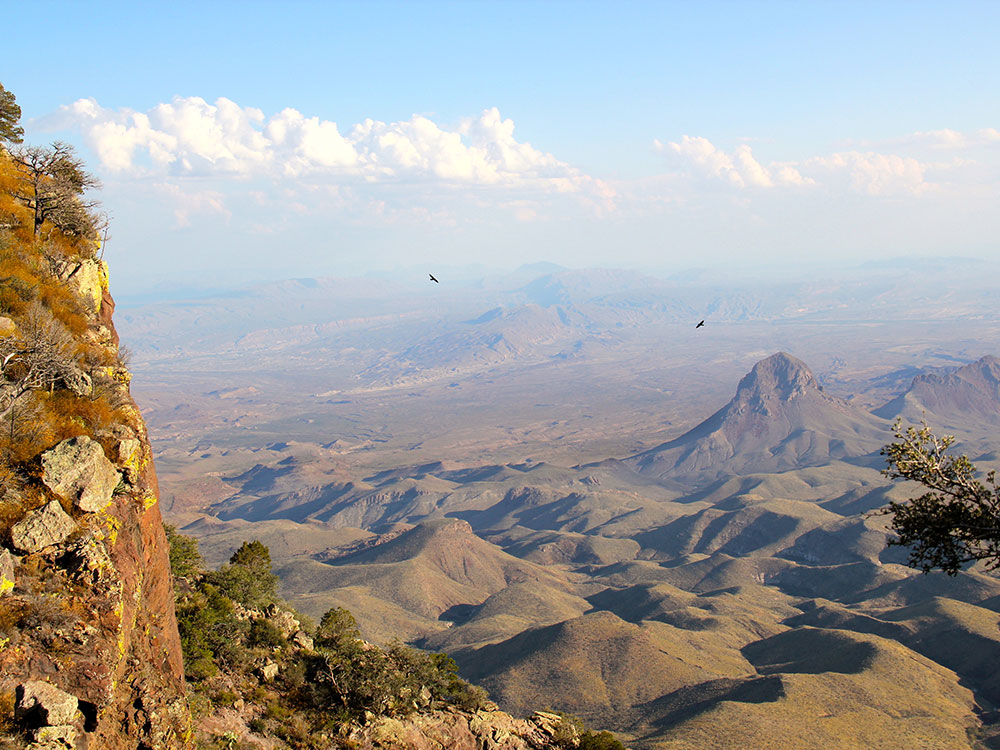

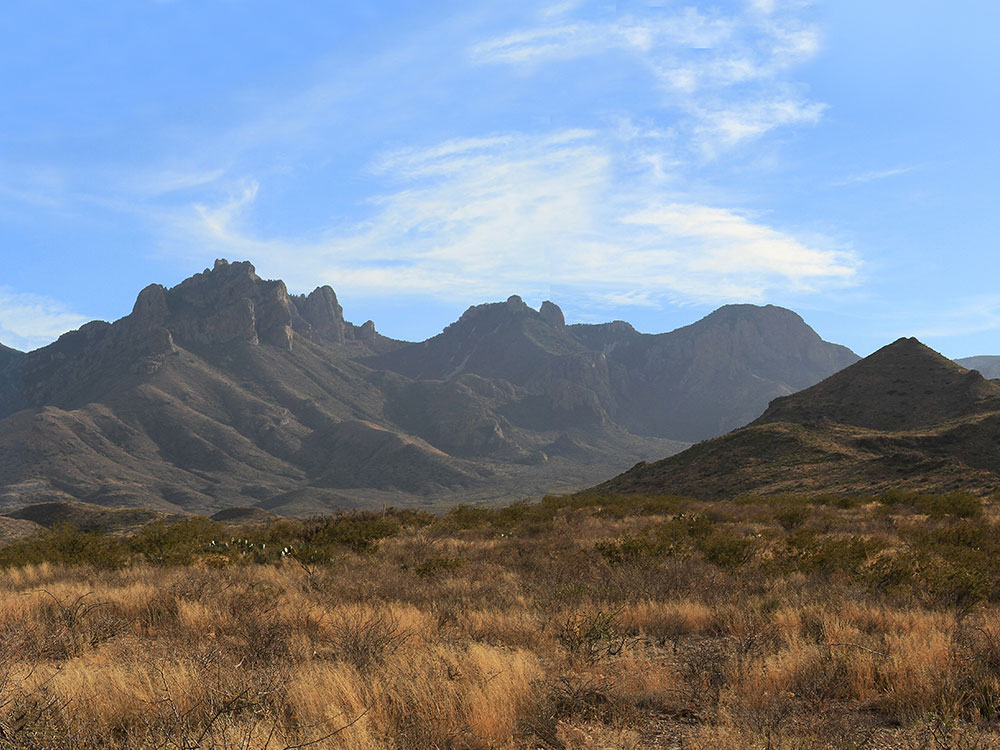

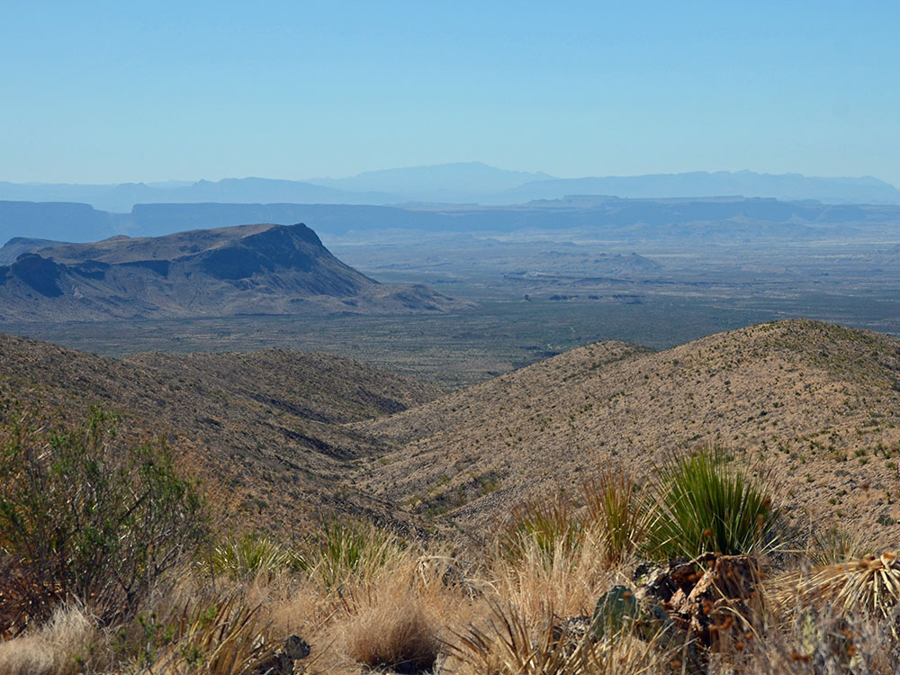

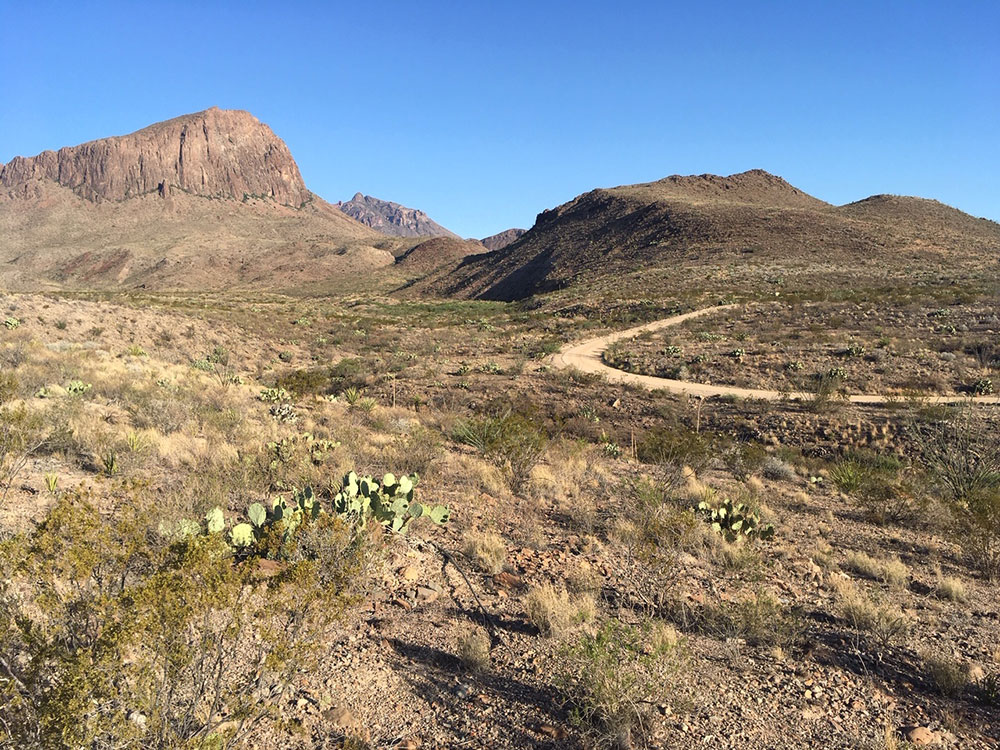
.JPG){kind=link}
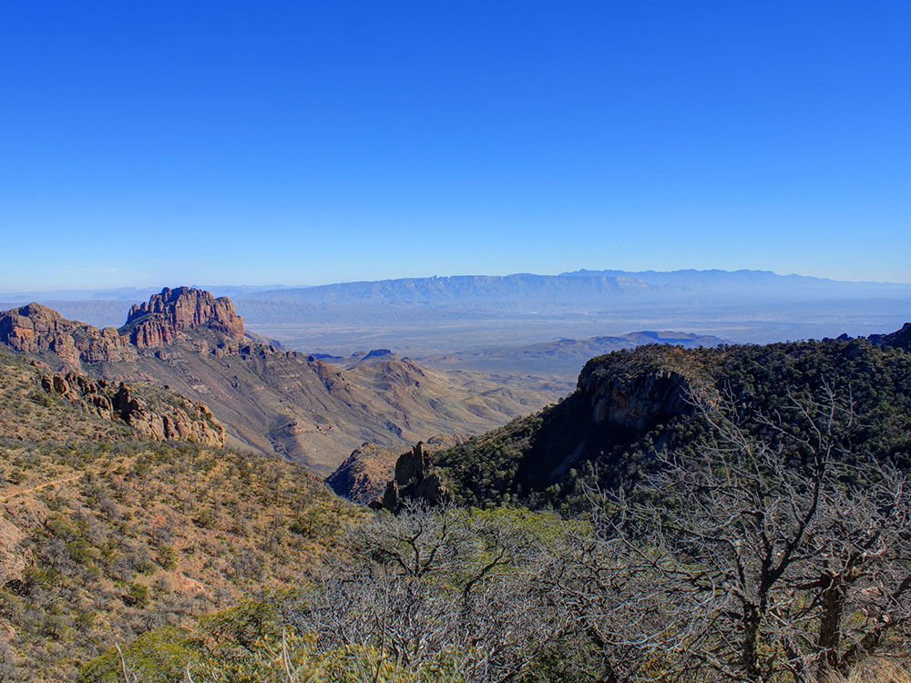

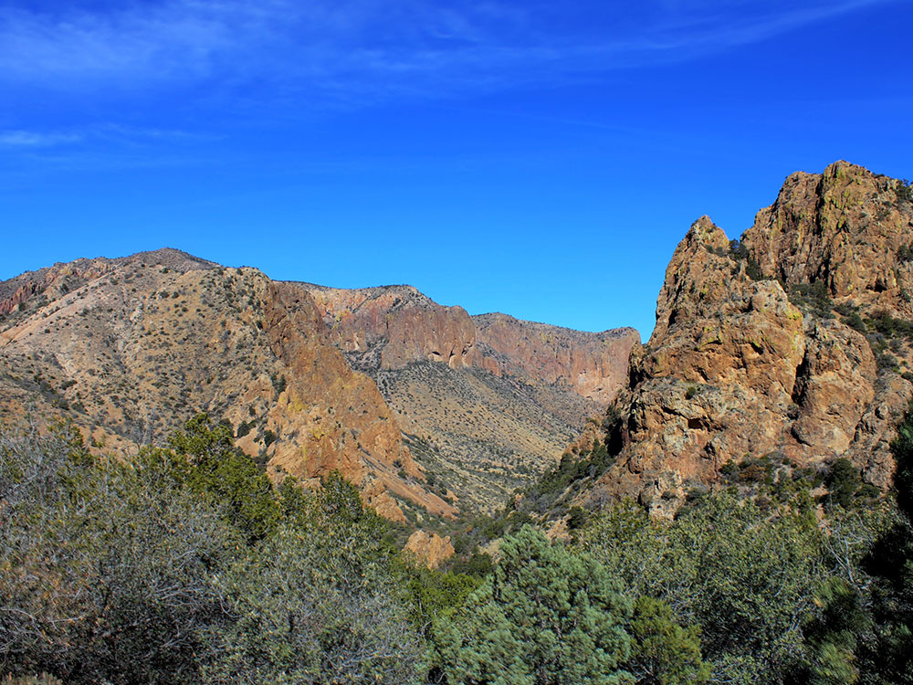

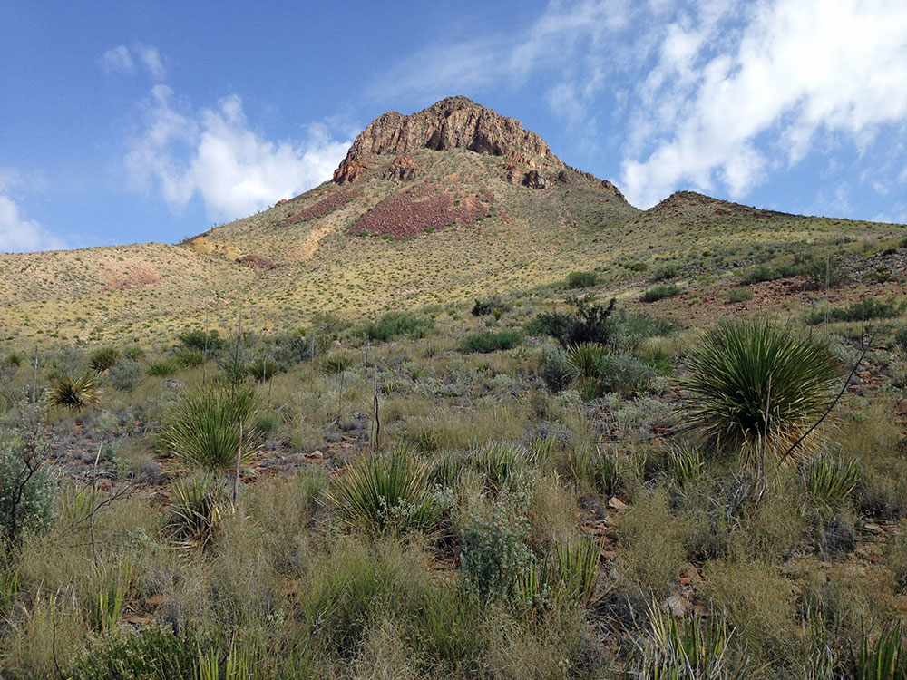